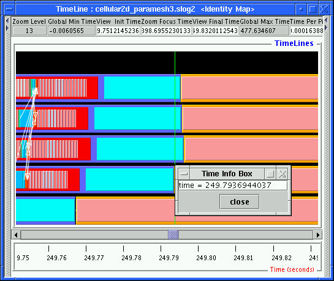

Figure:
Time Info Box displays the time
of where it pops up.

Time Info Box is created by right clicking in the empty space in either
timeline or tthe time ruler canvas as in Figure .
This Info Box is usually used as a marker for a single event in time.
![[*]](crossref.png) .
This Info Box is usually used as a marker for a single event in time.
.
This Info Box is usually used as a marker for a single event in time.